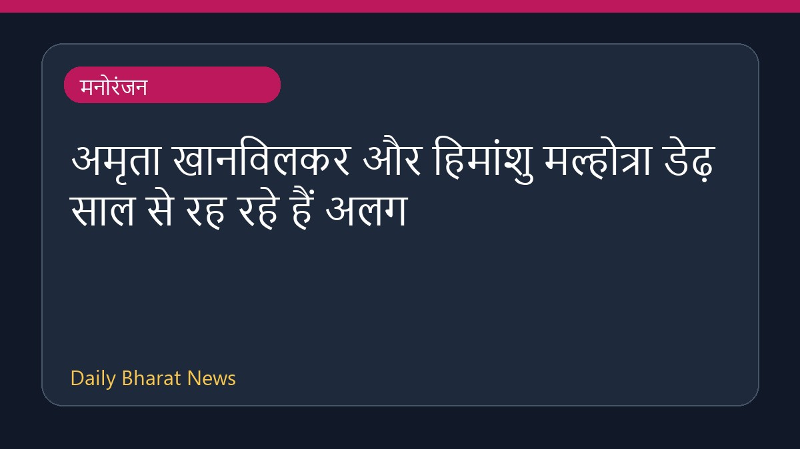

अमृता खानविलकर और हिमांशु मल्होत्रा डेढ़ साल से रह रहे हैं अलग

हालिया मीडिया रिपोर्ट्स के अनुसार, अभिनेत्री अमृता खानविलकर और उनके पति हिमांशु मल्होत्रा पिछले डेढ़ साल से अलग रह रहे हैं। शादी के 11 साल बाद आई इस खबर के बीच, दोनों के बीच अभी तक तलाक को लेकर कोई बात नहीं हुई है। सूत्रों से मिली जानकारी के मुताबिक वे अभी भी कानूनी रूप से विवाहित हैं और उनके बीच संबंध सौहार्दपूर्ण बने हुए हैं। इस विषय पर विस्तृत और आधिकारिक जानकारी अभी सीमित है।
मूल स्रोत: Entertainment Sources
Amruta Khanvilkar, Himanshu Malhotra staying separately since 1.5 years, no divorce talks yet: ‘We are still married’ | Bollywood - hindustantimes.com ↗
Amruta Khanvilkar, Himanshu Malhotra staying separately since 1.5 years, no divorce talks yet: ‘We are still married’ | Bollywood - hindustantimes.com ↗
संबंधित खबरें
 मनोरंजन
मनोरंजनरणबीर कपूर और यश स्टारर 'रामायण' के अंग्रेजी ट्रेलर से प्रशंसक प्रभावित
 मनोरंजन
मनोरंजनमिनी माथुर ने जीती एलायंस की ट्रॉफी, मिला 50 लाख रुपये का नकद पुरस्कार
 मनोरंजन
मनोरंजनक्या वरुण Tej अपनी फिल्म 'Korean Kanakaraju' से करेंगे 100 करोड़ क्लब में एंट्री?
 मनोरंजन
मनोरंजन